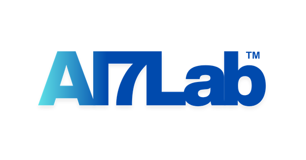
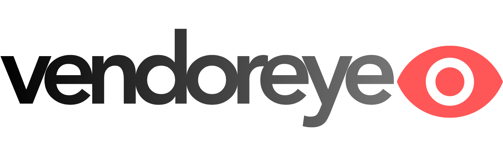
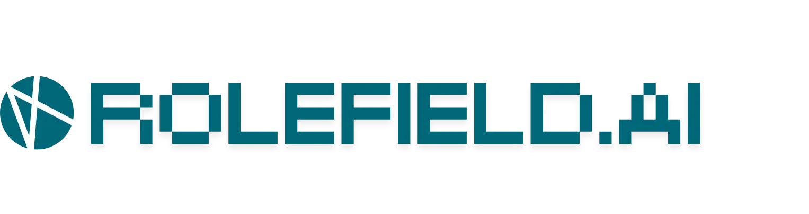

134,000+
registered vendors
20+
large scale buyers
8,000+
tenders published

Discuss a problemAgentic AI · built for real work
AI7Lab builds and scales agentic AI products, then applies the same product discipline to help leading organisations reduce cost, improve efficiency, and create new operational capability.

SUPPLIER
CUSTOMEROperating evidence
registered vendors
large scale buyers
tenders published
calls completed across customer operations
calls handled each month
in reported customer savings
Partners
Products
Two products, each focused on a high-value operational problem and designed to get better through real use.
01 / SUPPLIER INTELLIGENCE
Bring supplier discovery, qualification, evidence and opportunity intelligence into one continuously useful record.
Explore Vendoreye ↗02 / CUSTOMER OPERATIONS AI
One operating layer for support, calling and call-centre operations, with in-person kiosk AI through Seer.
Enterprise AI
We work with leading organisations to find the workflows where AI can create measurable value, then build the system needed to operate reliably.
How we work ↗Define the problem, owner and measurable baseline.
Validate the valuable workflow with representative data.
Connect systems, controls, actions and human authority.
Measure outcomes and evolve the product over time.
Designed to evolve
Models and components can evolve behind stable interfaces.
Quality, cost, latency and outcomes stay visible in operation.
Policies, approvals and human escalation are part of the system.
Prompts, schemas and workflows change with evidence and traceability.
Portfolio
Focused AI products for supplier intelligence and end-to-end customer operations, supported by tools born inside the lab.
Discover, verify, qualify and monitor vendors in one useful record.
Support, calling and call-centre operations, plus in-person AI through Seer.
A reusable visual and document intelligence capability.
Explore Taed ↗AI7Lab product · Vendoreye
Supplier discovery, evidence, qualification, monitoring and opportunity intelligence in one continuously useful vendor record.
Discuss supplier intelligence ↗Working model
Find relevant suppliers and opportunities.
Connect claims to source evidence.
Assess fit against business criteria.
Keep the record current and useful.
AI7Lab product · RoleField
RoleField brings customer support, calling and call-centre operations into one AI system, then extends the experience into physical spaces through Seer kiosk AI.
Discuss customer operations ↗One operating platform
RoleField is designed around the whole service operation—how customers enter, how work is routed, how outcomes are completed, and where people take control.
Run AI-assisted customer conversations with operating context, approved knowledge and a route to resolution.
Handle inbound and outbound calling at scale, with multilingual conversations connected to the work behind each call.
Coordinate conversations, queues, actions, system updates and human handoffs across the wider service operation.
Bring the same operational intelligence into physical customer environments through a context-aware AI interface.
RoleField · Seer
Seer is RoleField's kiosk AI experience for approved physical environments. It can recognise enrolled visitors, retrieve relevant profile context, start a device-trained conversation, retain interaction history, and capture supported documents.
Profile context available · conversation ready
Operational loop
Meet the customer through calls, support or a Seer kiosk.
Connect intent and context to the right workflow.
Complete approved actions or bring in a person.
Use operational evidence to strengthen the next interaction.
Enterprise AI
A product-led route from a measurable operational problem to a controlled AI system that works in practice.
Discuss a problem ↗A strong starting point
How we work
Problem, owner and baseline.
Valuable workflow and evidence.
Systems, controls and people.
Outcomes, monitoring and improvement.
Technology
Stable interfaces, replaceable components, monitored outcomes and clear human authority—from context to useful action.
State, tools and permissions around the model.
Policies, approvals and escalation paths.
Quality and outcome measurement in operation.
New capabilities without rebuilding the system.
Built by AI7Lab · Taed
Documents, images, video and audio become reliable, schema-controlled outputs for downstream workflows.
Discuss document intelligence ↗Insights
Existing articles and resources stay at their current URLs, reorganised around useful paths into products, technology and industries.
What changes when an AI system can use tools and complete workflow steps.
How workflow outcomes reveal more than call-level automation metrics.
A practical approach to interfaces, evaluations and migration.
Company
AI7Lab is a Dubai-based product company building agentic AI systems and working with organisations to turn difficult operations into useful products.
Find the valuable problem.
Build the smallest system that proves it.
Measure the operational result.
Keep improving what works.
Discuss a problem
Tell us about the workflow, its owner and the result that matters. This prototype does not submit data.